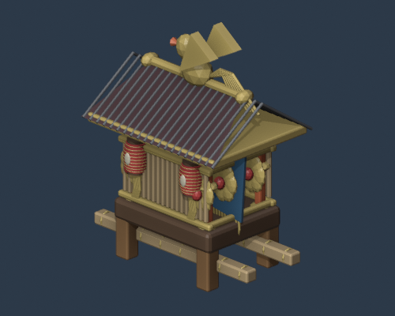
神輿matsuri_mikoshi · 15987 faces
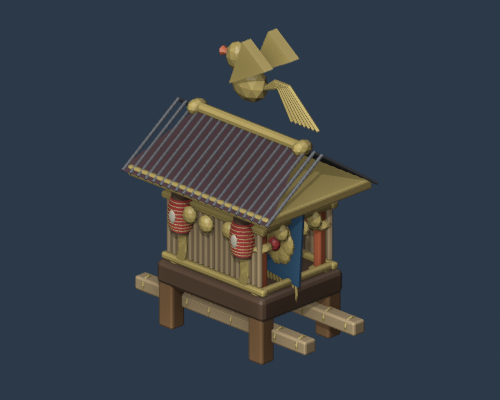
鳳凰付き神輿matsuri_mikoshi_phoenix · 14707 faces
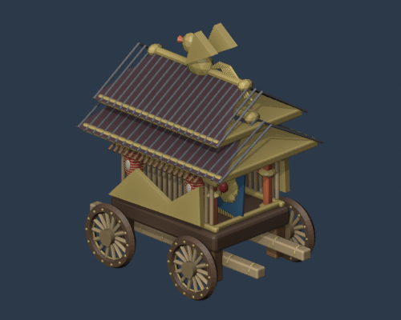
だんじりmatsuri_danjiri · 18205 faces
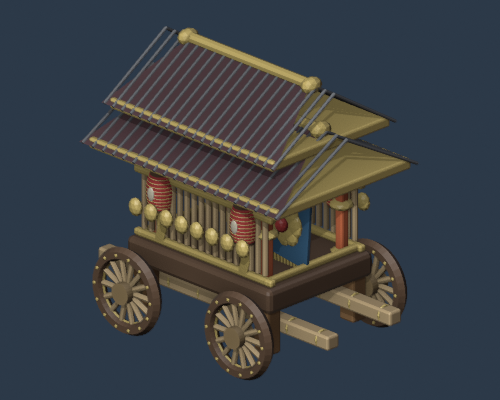
曳山matsuri_hikiyama · 18718 faces
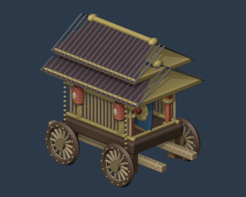
屋台山車matsuri_yatai_float · 18734 faces
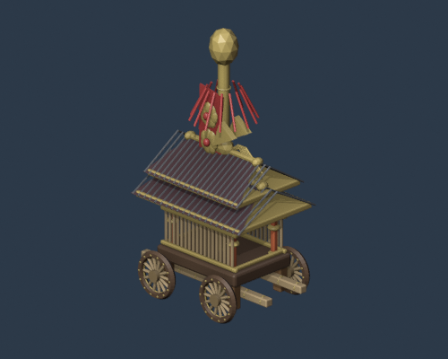
鉾matsuri_hoko_float · 11903 faces
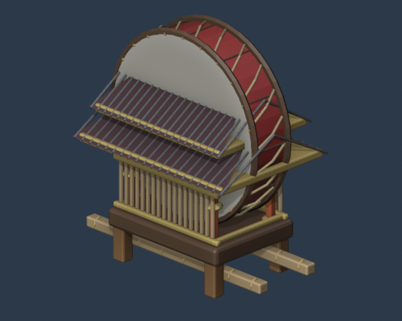
太鼓台matsuri_taikodai · 7704 faces
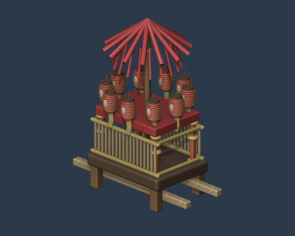
笠鉾matsuri_kasaboko · 22298 faces
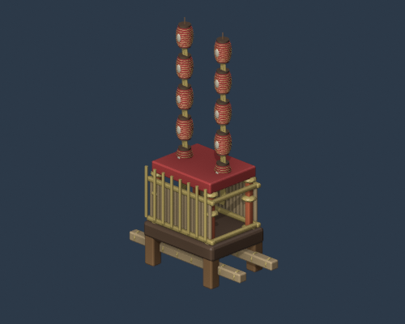
祭礼提灯台matsuri_lantern_tower · 21768 faces
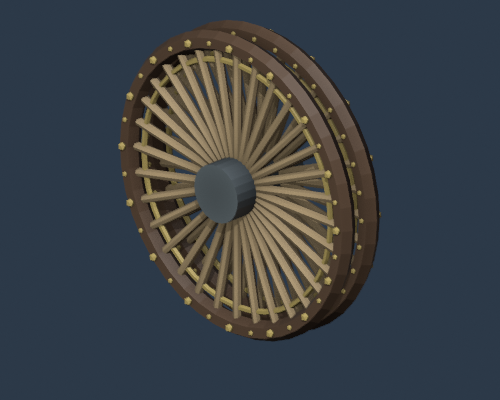
山車車輪matsuri_float_wheel · 3598 faces
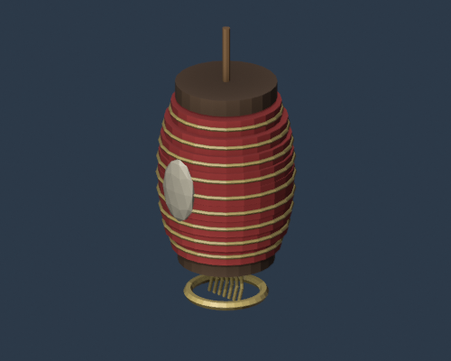
提灯ritual_chochin · 2196 faces
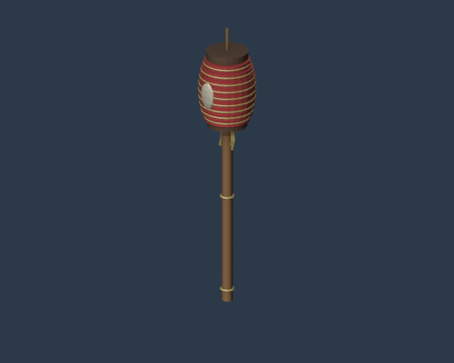
高張提灯ritual_takachochin_pole · 2238 faces
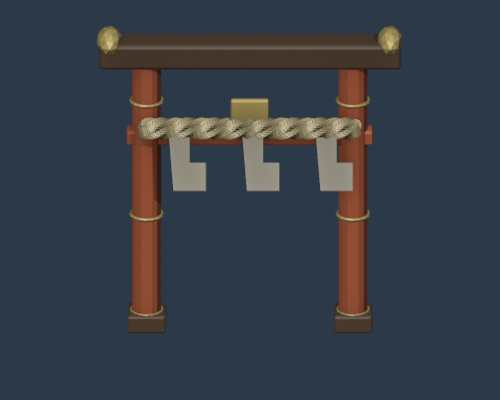
注連縄飾りritual_shimenawa_gate · 3286 faces
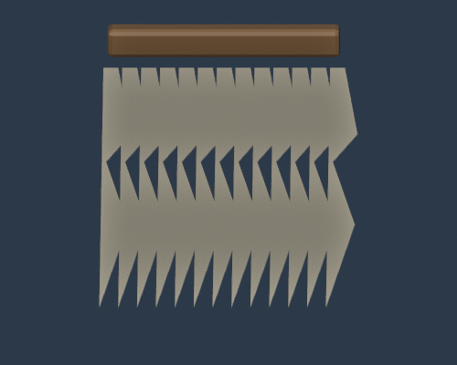
紙垂束ritual_shide_bundle · 158 faces
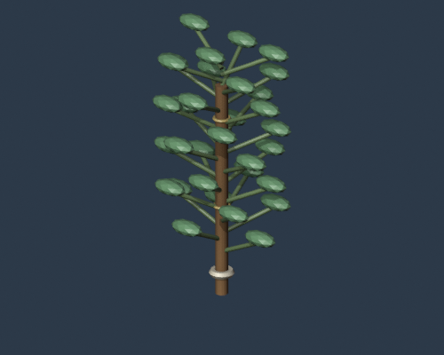
榊ritual_sakaki_branch · 3442 faces
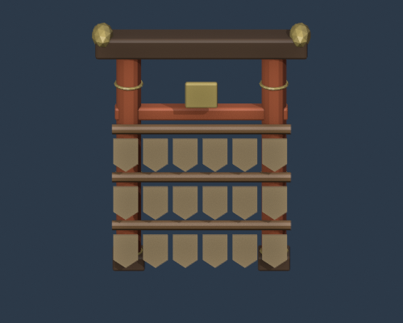
絵馬掛けritual_ema_stand · 1204 faces
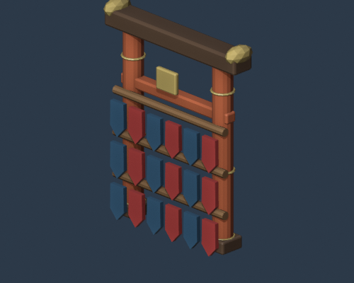
御守掛けritual_omamori_rack · 1204 faces
賽銭箱ritual_saisen_box · 942 faces
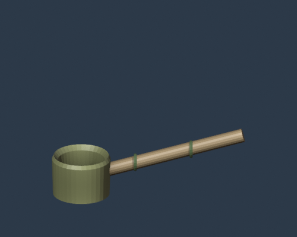
手水舎の柄杓ritual_temizuya_ladle · 442 faces
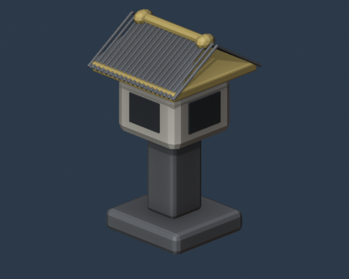
祭礼灯籠ritual_festival_lantern · 1006 faces
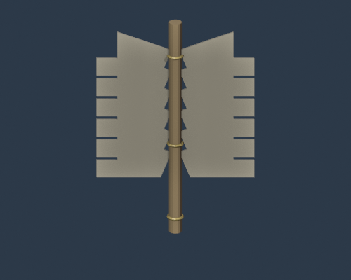
御幣shinji_gohei · 402 faces
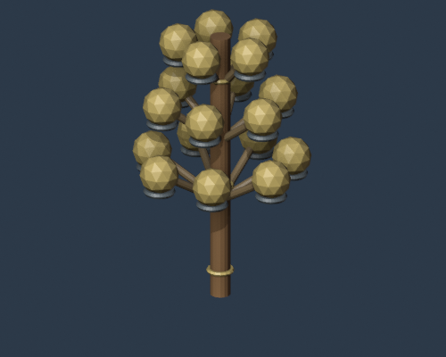
神楽鈴shinji_kagura_suzu · 5418 faces
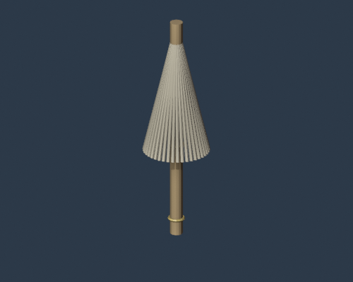
祓串shinji_haraegushi · 1146 faces
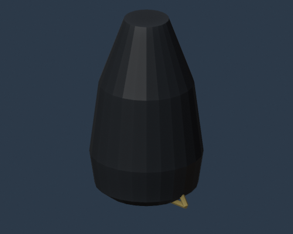
烏帽子shinji_eboshi · 288 faces
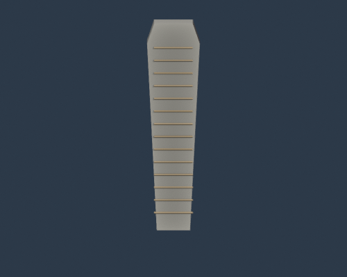
笏shinji_shaku · 176 faces
奉幣盆shinji_houbei_tray · 910 faces
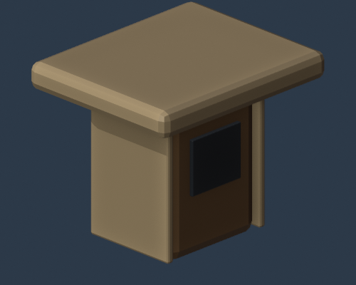
三方shinji_sanbo · 324 faces
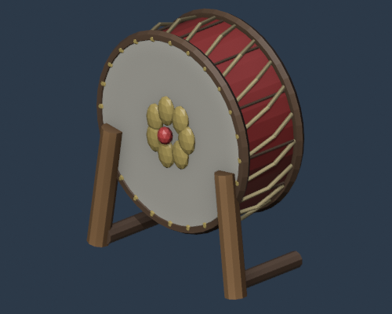
神事太鼓shinji_ritual_drum · 2838 faces
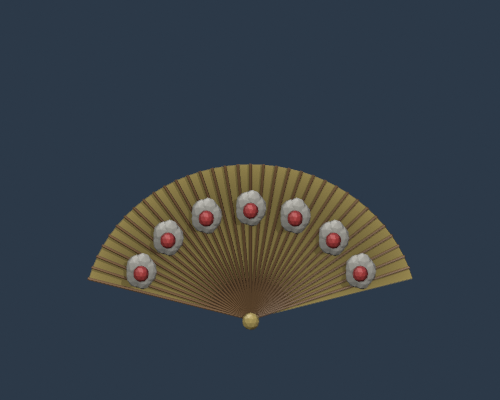
神事扇shinji_ritual_fan · 4144 faces
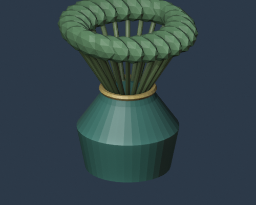
榊立てshinji_sakaki_stand · 2546 faces
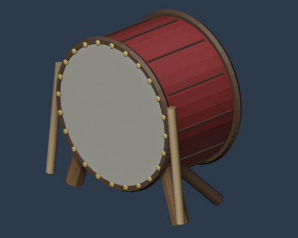
長胴太鼓gakki_nagadou_taiko · 1794 faces
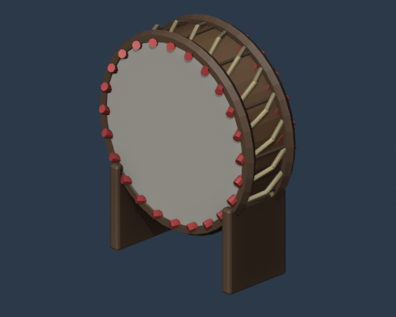
締太鼓gakki_shime_daiko · 2738 faces
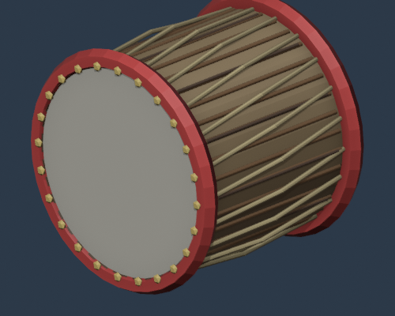
桶胴太鼓gakki_okedo_daiko · 3014 faces
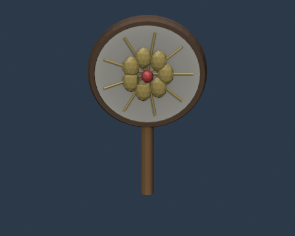
団扇太鼓gakki_uchiwa_daiko · 2478 faces
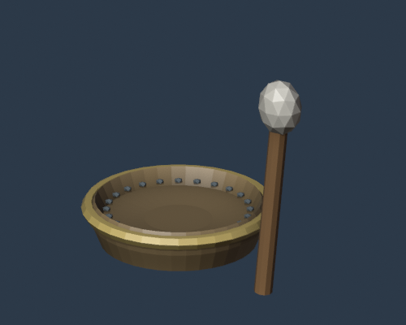
当り鉦gakki_atarigane · 982 faces
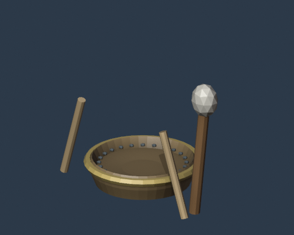
鉦と撞木gakki_kane_bachi · 1006 faces
篠笛gakki_shinobue · 1350 faces
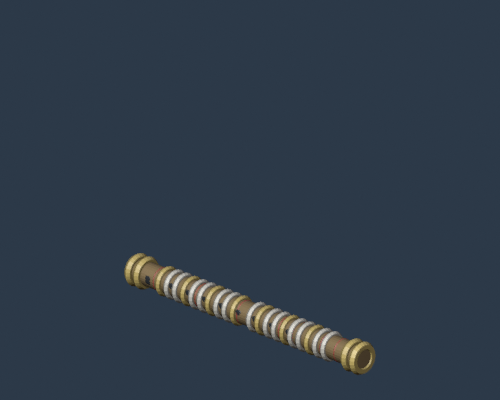
龍笛gakki_ryuteki · 5814 faces
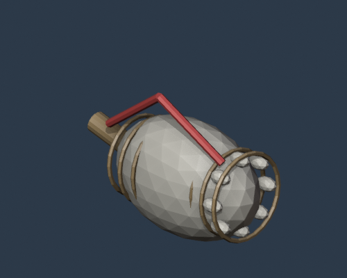
法螺貝gakki_horagai · 2294 faces
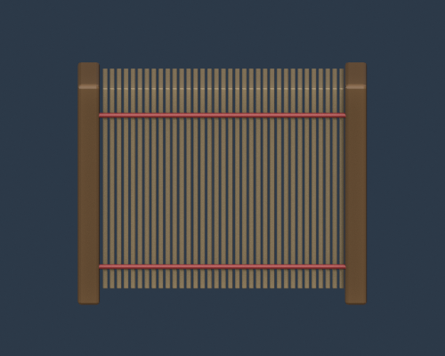
簓gakki_sasara · 2838 faces
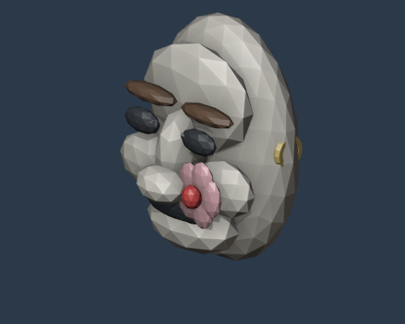
小面noh_koomote_mask · 1892 faces
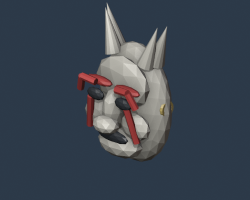
般若面noh_hannya_mask · 1508 faces
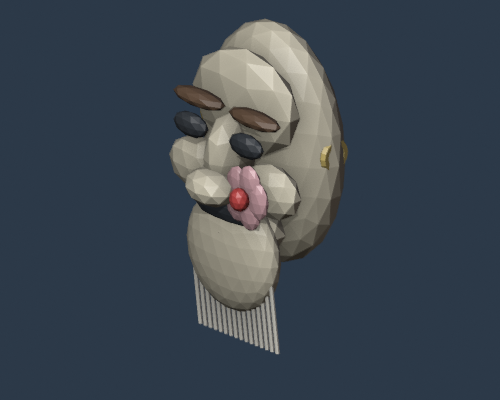
翁面noh_okina_mask · 2352 faces
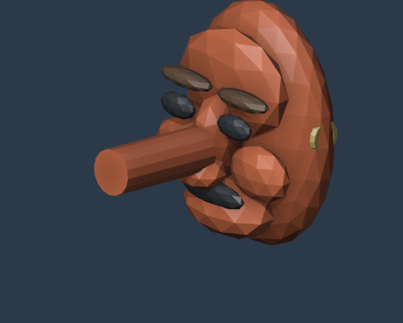
天狗面noh_tengu_mask · 1410 faces
能扇noh_folding_fan · 3952 faces
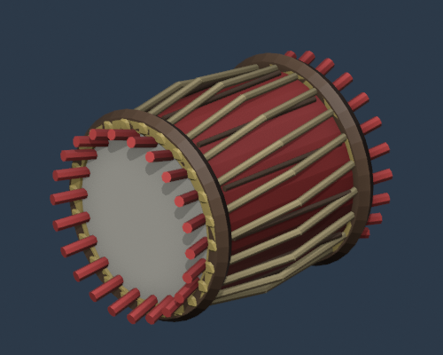
小鼓noh_kotsuzumi · 2878 faces
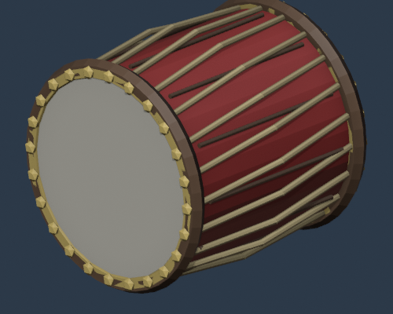
大鼓noh_otsuzumi · 2878 faces
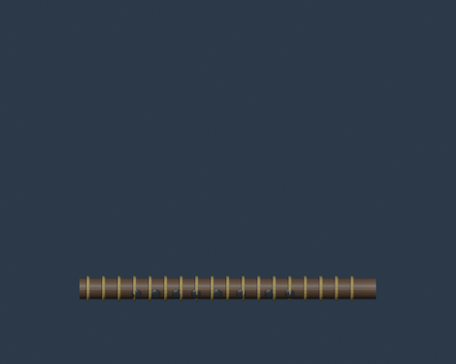
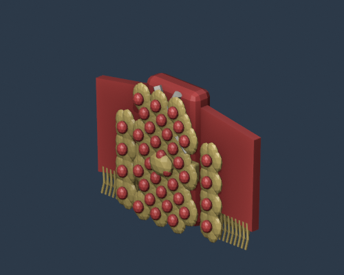
唐織noh_costume_karaori · 24192 faces
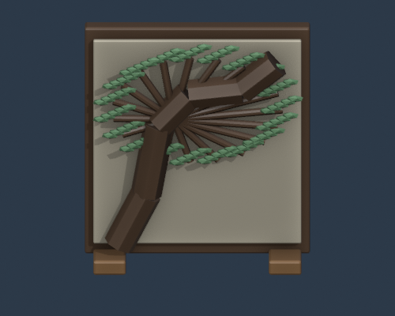
鏡板noh_stage_pine_panel · 2394 faces
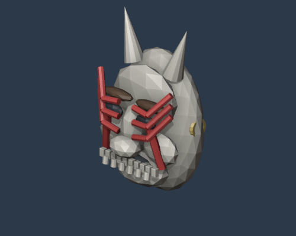
隈取面kabuki_kumadori_mask · 2170 faces
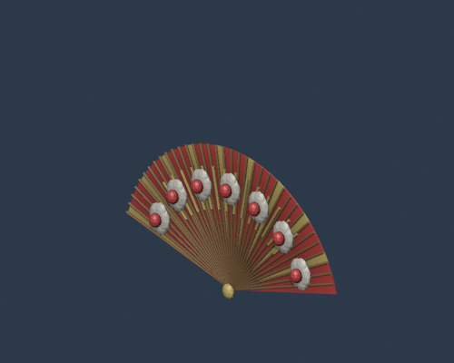
見得扇kabuki_mie_fan · 4156 faces
引抜衣装kabuki_hikinuki_costume · 4984 faces
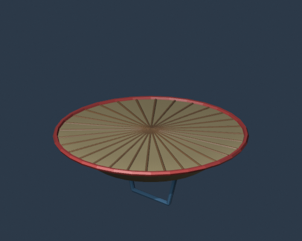
歌舞伎笠kabuki_kasa_hat · 728 faces
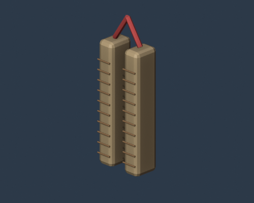
拍子木kabuki_hyoshigi · 368 faces
附け板kabuki_tsukeita · 294 faces
黒衣頭巾kabuki_kurogo_hood · 390 faces
芝居提灯kabuki_stage_lantern · 2082 faces
女形簪kabuki_onnagata_kanzashi · 2406 faces
煙管小道具kabuki_kiseru_prop · 2068 faces
舞扇buyo_folk_sensu · 3952 faces
舞鈴buyo_folk_suzu · 1896 faces
舞傘buyo_folk_kasa · 1102 faces
手拭buyo_folk_tenugui · 422 faces
舞用扇buyo_folk_mai_ogi · 11792 faces
獅子頭buyo_folk_shishimai_head · 1596 faces
獅子舞胴幕buyo_folk_shishimai_cloth · 15512 faces
狐面buyo_folk_kitsune_mask · 1488 faces
鬼面buyo_folk_oni_mask · 2058 faces
びんざさらbuyo_folk_binzasara · 4848 faces
法被costume_happi · 5312 faces
鉢巻costume_hachimaki · 452 faces
足袋costume_tabi · 1880 faces
草鞋costume_waraji · 1100 faces
祭下駄costume_geta_festival · 556 faces
鈴脚絆costume_bell_anklet · 3372 faces
千早costume_miko_chihaya · 5612 faces
緋袴costume_miko_hakama · 708 faces
頭襟costume_yamabushi_tokin · 646 faces
法螺貝紐costume_horagai_strap · 1438 faces
鳥居小道具stage_torii_prop · 1042 faces
鏡板パネルstage_kagamiita_panel · 3188 faces
金屏風stage_byobu_gold · 3060 faces
雪洞stage_bonbori · 458 faces
行灯stage_andon · 810 faces
祭暖簾stage_noren_festival · 3526 faces
櫓stage_yagura_tower · 11120 faces
提灯列stage_lantern_string · 12696 faces
紅白幕stage_kouhaku_curtain · 3488 faces
太鼓台stage_drum_stand · 234 faces
なまはげ面local_namahage_mask · 2112 faces
なまはげ包丁小道具local_namahage_knife_prop · 265 faces
デコンボ面local_dekonnbo_mask · 1558 faces
郷土祭礼兜local_hyakumangoku_helmet · 2946 faces
阿波踊り団扇local_awaodori_fan · 4704 faces
阿波踊り編笠local_awaodori_amigasa · 1168 faces
エイサー・パーランクーlocal_eisa_paranku · 2362 faces
エイサー大太鼓local_eisa_odaiko · 2830 faces
笠踊り笠local_kasaodori_hat · 746 faces
田楽鍬小道具local_dengaku_hoe_prop · 860 faces